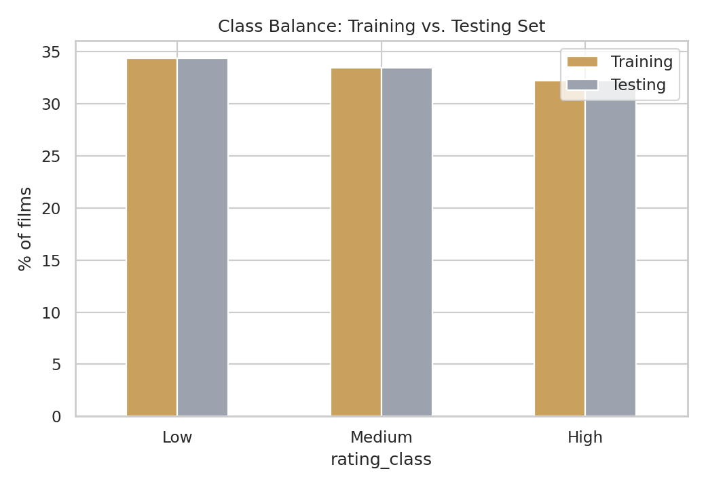
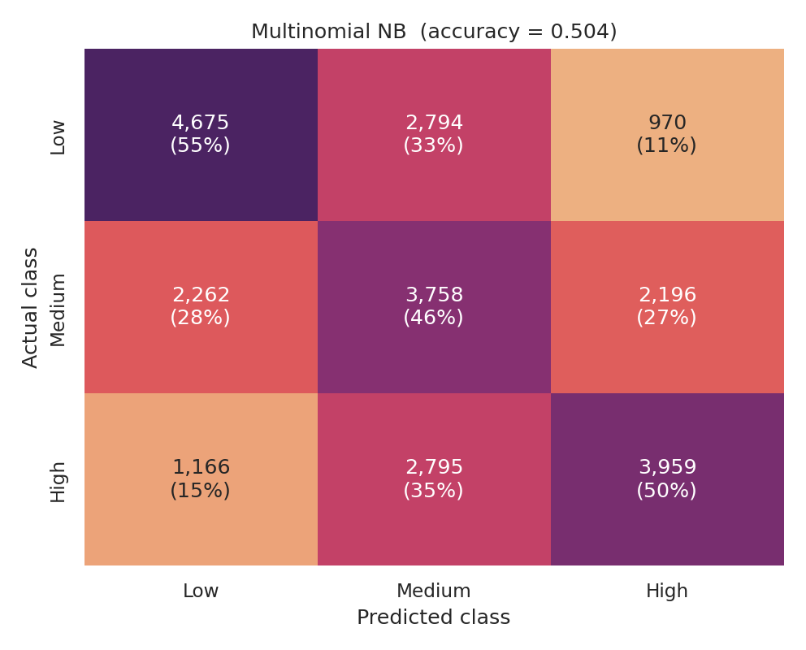
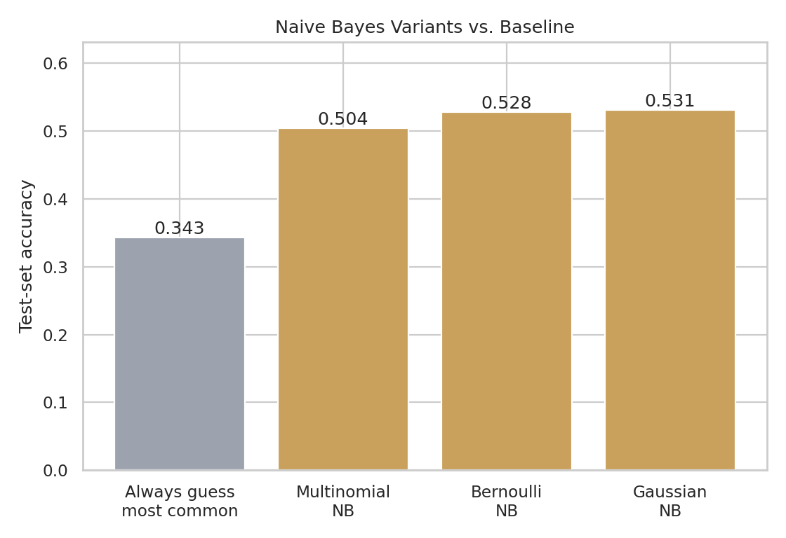
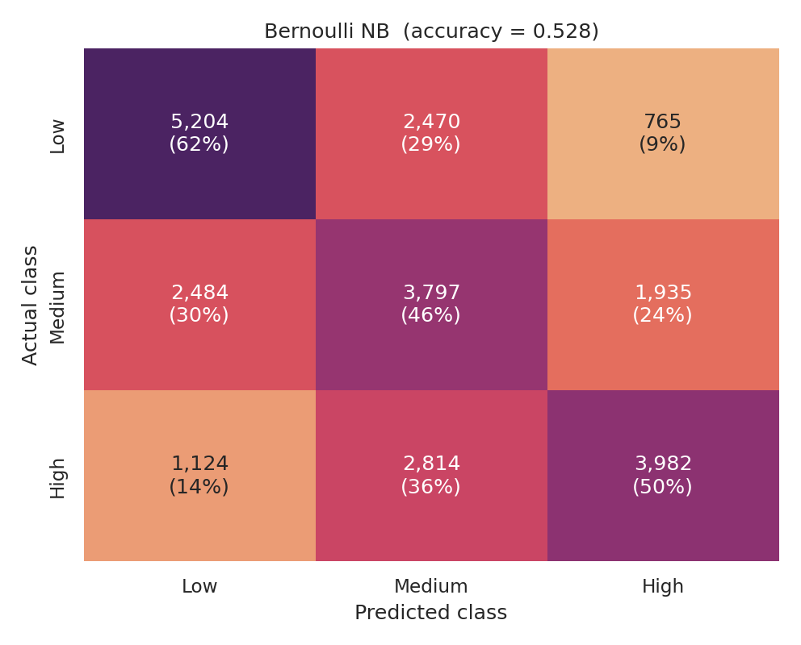
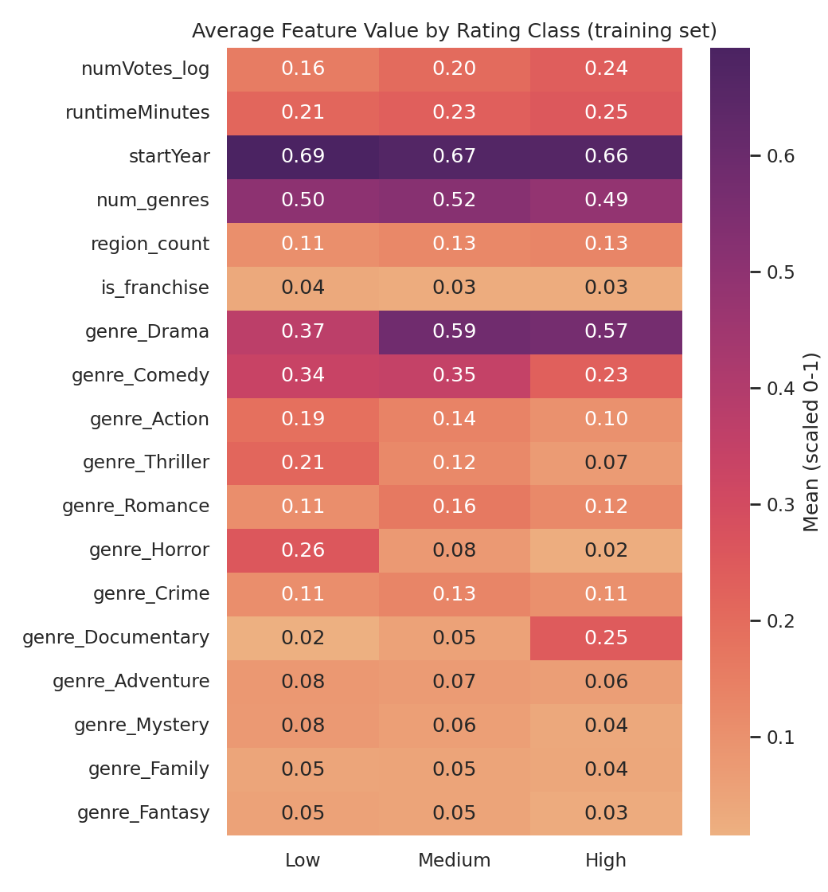

Section 05
Naïve Bayes
Predicting whether a film lands in the Low, Medium, or High rating tier from its structural attributes, using a probabilistic classifier.
(a) Overview
Naïve Bayes (NB) is a family of supervised classification algorithms built on Bayes' theorem. Given the features describing an item, NB calculates the probability that the item belongs to each possible class and predicts the class with the highest probability. Bayes' theorem expresses that calculation as the prior probability of the class (how common it is overall) multiplied by the likelihood of seeing these particular features within that class:
P(class | features) ∝ P(class) × P(feature₁ | class) × P(feature₂ | class) × … × P(featureₙ | class)The word "naïve" refers to one simplifying assumption: given the class, every feature is treated as independent of every other. That is rarely literally true (a film's runtime and genre count are related, for example), but the assumption collapses an otherwise intractable joint probability into a simple product of one-feature probabilities. The result is a model that trains in a single pass over the data, needs relatively little data to produce stable estimates, scales to very many features, and often classifies well even when the independence assumption is only roughly satisfied. NB is widely used for spam filtering, document and sentiment classification, medical diagnosis support, and any setting where fast, lightweight probabilistic predictions are valuable.
Multinomial Naïve Bayes
Multinomial NB is the standard version, designed for features that represent counts or frequencies, such as how many times each word appears in a document. For each class it estimates how much of the total "count mass" each feature accounts for, using additive (Laplace) smoothing so that a feature never seen in a class during training does not force that class's probability to zero:
P(featureᵢ | class) = (count of featureᵢ in class + α) / (total count in class + α × number of features)Because it works with counts, Multinomial NB requires non-negative feature values. It is the version used as the primary model in this project, with each numeric feature rescaled to the 0 to 1 range so that all values are non-negative and comparable in size.
Bernoulli Naïve Bayes
Bernoulli NB is designed for binary features, each recording only whether something is present (1) or absent (0). Unlike Multinomial NB, which ignores a feature that is absent, Bernoulli NB explicitly models absence as evidence too: a film not being a Horror title counts toward the class probabilities just as being one does. It is a natural fit for short documents and yes/no indicators. Here it is applied to the genre indicator flags, the franchise flag, and the numeric features converted to "above or below the training-set median."
| Variant | Feature type | Absent features | Used here for |
|---|---|---|---|
| Multinomial NB | Non-negative counts / frequencies | Ignored | Primary model (features scaled 0–1) |
| Bernoulli NB | Binary (0/1) | Counted as evidence | Comparison (genre flags + median splits) |
| Gaussian NB | Continuous, roughly bell-shaped | Not applicable | Extra comparison on raw values |
(b) Data Prep
Labeled data
Supervised learning requires labeled data: every example must come with the correct answer so that the model has something to learn from and be scored against. Only labeled data can be used for supervised methods. The label here is the film's rating tier, created by splitting the average IMDb rating at its 33rd and 67th percentiles into three equally sized classes: Low, Medium, and High. Equal class sizes mean that guessing is right about a third of the time, which makes accuracy easy to interpret. The rating itself is then removed from the inputs, so the model must predict the tier from structure alone.
The inputs are numeric only, as scikit-learn requires: log-transformed vote count, runtime, release year, number of genres, number of international regions, a 0/1 franchise flag (from the title-pattern heuristic), and twelve 0/1 indicator columns for the most common genres.

A few rows and a subset of columns; the full file has all twelve genre indicators.
Link to the labeled data: data/labeled_data.csv
Training and testing sets
The labeled data was randomly divided into a training set (80%), used to build the model, and a testing set (20%), used only to measure how well the finished model performs. The split was stratified, meaning each set preserves the same Low / Medium / High proportions as the whole, and it was done by film, so each film appears in exactly one set.
The two sets must be disjoint (share no films). A model evaluated on films it already saw during training is being quizzed on its own answer key: it can score well by memorizing rather than by learning patterns that carry over to new films. Keeping the testing set completely unseen is what makes the accuracy figure an honest estimate of performance on films the model has never encountered. Disjointness was verified in code rather than assumed, and any scaling or median thresholds were calculated from the training set alone and then applied to the testing set.



Links: data/train_set.csv · data/test_set.csv
(c) Code
Python with scikit-learn. Full script: scripts/naive_bayes.py (the label creation, feature building, and disjoint train/test split are at the top of the file; the Decision Trees tab reuses the same split).
from sklearn.naive_bayes import MultinomialNB, BernoulliNB
from sklearn.preprocessing import MinMaxScaler
from sklearn.metrics import accuracy_score, confusion_matrix
# Multinomial NB needs non-negative features -> scale to 0-1, fitting on TRAINING data only
scaler = MinMaxScaler().fit(X_train)
mnb = MultinomialNB(alpha=1.0).fit(scaler.transform(X_train), y_train)
pred = mnb.predict(scaler.transform(X_test))
print(accuracy_score(y_test, pred))
print(confusion_matrix(y_test, pred, labels=["Low", "Medium", "High"]))
# Bernoulli NB on binary features (numeric columns split at the training median)
bnb = BernoulliNB(alpha=1.0).fit(binarize(X_train), y_train)
(d) Results
| Model | Test accuracy |
|---|---|
| Baseline: always guess the most common class | — |
| Multinomial NB (primary) | — |
| Bernoulli NB | — |
| Gaussian NB (extra) | — |
Fill from your console output or nb_metrics.json.
Confusion matrix — Multinomial NB

Rows are the actual class, columns the predicted class. The diagonal shows correct predictions; each cell also shows the share of that actual class (row percentage).
Model comparison


What separates the classes
